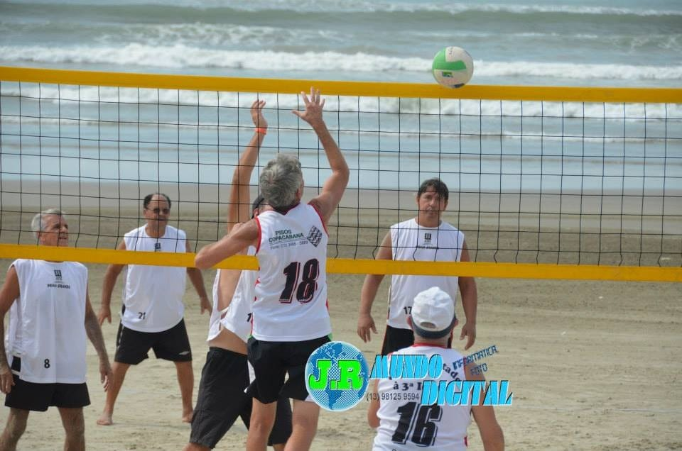

Atividades

Dança e Atividades Físicas
Oferecemos aulas de dança, biribol, vôlei de praia 4x4 e vôlei de quadra, preparando os idosos para competições. Também realizamos ginástica e atividades de alongamento.

Teatro e Eventos Culturais
Promovemos atividades teatrais, festas típicas como Halloween, festa julina, aniversários do mês, e passeios culturais e esportivos, garantindo diversão e integração social.

Jogos e Reflexões
Realizamos jogos de mesa, debates temáticos em círculo com mediação, e sessões de filmes reflexivos para promover o pensamento crítico e o convívio social.